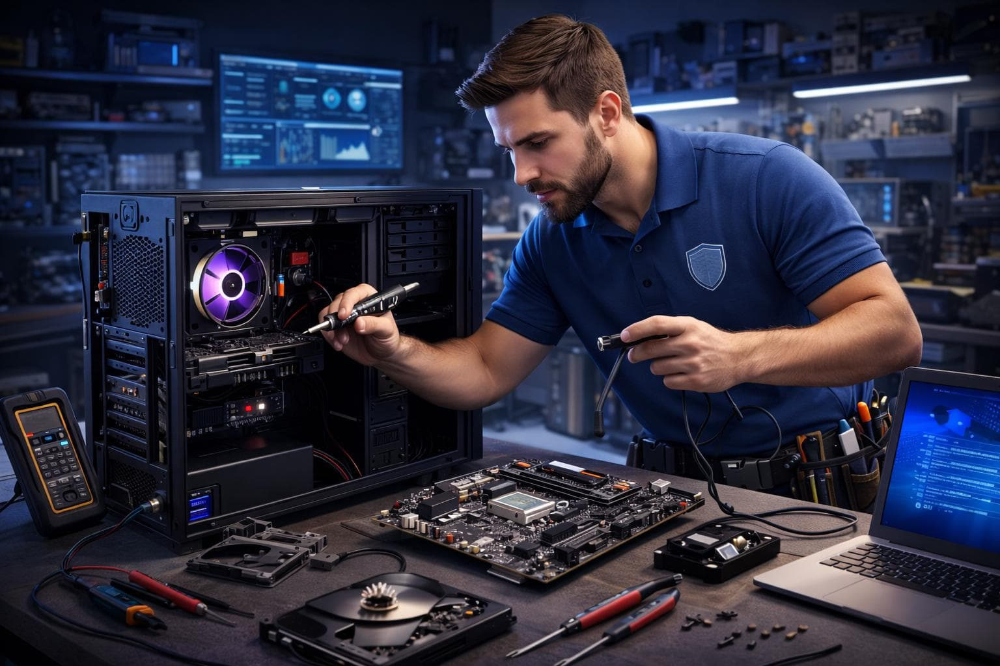

Desktop Repair
Troubleshooting and repair for desktop computers, including hardware failures and system issues.
Preparing your experience...
COMPUTER SERVICE
01 — COMPUTER & LAPTOP REPAIR
From unexpected shutdowns to hardware failures, we provide professional computer and laptop repair solutions to get your device working again.

Expert Computer Care
WHAT WE DO
Whether your computer is running slowly, experiencing hardware problems or refusing to start, our repair service helps identify the issue and find the right solution.
Troubleshooting and repair for desktop computers, including hardware failures and system issues.
Professional laptop troubleshooting, component replacement and hardware repair.
Identifying faulty components and performance issues through systematic hardware testing.
COMMON COMPUTER ISSUES
Computer problems can appear in many different ways. Here are some of the most common issues we can help diagnose.
OUR REPAIR APPROACH
We focus on identifying the actual cause of the problem instead of simply treating the symptoms. Every repair starts with understanding what your device needs.
Discuss Your RepairChecking components and identifying possible hardware issues.
Investigating symptoms to determine the cause of the malfunction.
Explaining possible repair options and recommended solutions.
Testing the device after repair to check its operation.
WHY NEXORA
We believe technical support should be straightforward, transparent and focused on solving the real problem.
We investigate the source of the problem before recommending a repair.
Repair recommendations based on your device and its actual condition.
We explain the problem and available options in understandable language.
We check device operation after completing the repair work.
GOT QUESTIONS?
Find answers to common questions about our computer and laptop repair services.
Still have questions? Contact us →We work with desktop computers and laptops, including hardware troubleshooting, component replacement and general computer diagnostics.
Repair time depends on the type of issue, device condition and availability of replacement components. We can provide a more accurate estimate after inspecting your device.
It is helpful to describe the symptoms when contacting us. This gives our technicians a better understanding of the issue.
Yes, we can investigate possible causes, including power supply problems, motherboard issues and other hardware failures.
We understand how important your data is. However, some repairs may involve risks to stored information. We recommend backing up important files whenever possible before service.
LET'S GET STARTED
Tell us what's happening with your device. We'll help you find the right repair solution.
Get in Touch